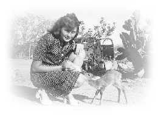
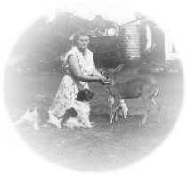

| Histoire pour l'heure du coucher |
(Initialement en anglais) |
|  |
Dans l'arrière-jardin de ma famille, nous avons suspendu une mangeoire là où les oiseaux peuvent venir y manger les graines que nous leur fournissons. Parfois, il y a tellement d'oiseaux essayant de se nourrir en même temps que la mangeoire tombe presque, et encore plus d'oiseaux font la queue. Nous aimons les regarder se nourrir joyeusement, mais souvent quand nous sortons les oiseaux ont peur de nous et s'envolent. Cela m'attriste, et j'aimerais pouvoir leur dire qu'ils peuvent rester manger en toute sécurité.
Quand j'avais six ans, ma soeur Jennifer m'a appris à monter à cheval, et pendant les vacances scolaires, j'avais l'habitude de monter autour de la ferme familiale avec elle et mes deux frères, Grahame et Richard. Bien sûr, je suis tombé plusieurs fois de mon cheval (son nom était Blue Peter), mais je me remettais en selle pour ne pas avoir peur de monter ou de tomber.
Un jour, tous les quatre nous chevauchions à travers les buissons accompagnés par nos trois chiens, Curly, Jock, et Sailly. Soudain, les chiens se sont arrêtés près des hautes herbes et ont commencé à aboyer fortement. Nous avons stoppé nos chevaux et sommes descendus pour regarder ce qu'ils avaient trouvé : un minuscule faon ! Il était né depuis quelques heures et pouvait à peine se tenir debout. Heureusement, les chiens étaient gentils et ne l'ont pas blessé. Ma soeur Jen le berçait dans ses bras alors que mes frères et moi commencions à chercher la mère, sachant qu'elle n'aurait pas abandonné sa progéniture.
Tristement, nous avons trouvé la mère (une antilope, ou petit cerf africain) gisant morte. Elle avait été attrapée dans un filet métallique. C'est une forme cruelle de piège faite d'un noeud coulant métallique, que certaines gens emploient pour attraper les animaux sauvages. Jock a été une fois attrapé dans un tel filet et aurait pu être aisément tué (une autre histoire !) Nous avons nommé le petit faon Bambi, d'après le célèbre personnage de Walt Disney, et Jennifer l'a nourri au biberon. (Voir la photo Bambi 1)
Comme il devenait plus grand, Bambi apprenait à manger sa nourriture naturelle des buissons pour qu'il ne soit pas dépendant de nous. Cependant, sa nourriture favorite était les pétales de rose de la roseraie de ma mère ! Ma mère avait plus d'une centaine de beaux rosiers et nous avons dû mettre une clôture tout autour pour garder Bambi loin d'eux, autrement il aurait mangé chaque fleur. Néanmoins, il arrivait souvent à passer à travers la clôture et devait être reconduit hors du jardin de roses.
Quand il est devenu adulte, avec de fières petites cornes sur sa tête, Bambi a disparu une fois dans les buissons pour quelques jours. Et puis il est réapparu au fond de notre jardin, et quand ma mère l'a appelé Bambi de sa voix aiguë et chantante, il est accouru vers elle. Alors les chiens sont venus lui dire bonjour, leur queue frétillante et reniflant son pelage pour sentir le parfum de l'endroit d'où il venait. Après un moment, Bambi et les chiens jouaient au jeu "Attrapez-moi si vous pouvez !" Bambi courrait loin dans le jardin et les chiens le suivaient, mais il était si rapide qu'ils pouvaient rarement l'attraper. Ils passaient une demi-heure à courir à travers le jardin. Parfois, Bambi s'arrêtait si soudainement que les chiens tombaient à côté de lui, et alors il courrait dans la direction opposée. Ils aimaient réellement ce jeu. Après une heure ou plus, et après avoir mangé lui-même un peu de pétales de rose comme récompense, Bambi venait chez ma mère et, après qu'elle l'ait caressé un moment, il disparaissait dans les buissons.
Comme le temps passait, Bambi venait moins souvent et nous nous inquiétions de ce qu'il soit tué par un des agriculteurs voisins. Un jour, ma mère a vu Bambi au fond du jardin et l'a appelé, mais il est resté là-bas. A côté de lui se tenait une jeune femelle ! Bambi avait trouvé une compagne ! Ma mère continuait de l'appeler mais après quelques minutes, Bambi et sa jolie partenaire se sont enfuis au loin, et pendant presque deux ans les rosiers de ma mère se sont développés sans être abîmés.
|  |
Et puis, un jour ma mère était en train de travailler dans le jardin quand elle a vu un beau cerf se tenant au fond du jardin. Elle a appelé : " Bambi " et le cerf a couru vers elle. Il est resté tandis que ma mère le caressait, et il laissait les chiens renifler son pelage. (Voir la photo Bambi 2.) Il tremblait un peu au début quand les chiens voulaient jouer, mais alors il a couru soudainement au loin et le jeu a commencé ! Ils couraient partout dans le jardin, s'amusaient jusqu'à ce que les chiens soient épuisés. Puis le cerf a couru vers ma mère et après qu'elle l'ait caressé pendant quelques minutes, il a disparu au loin dans les buissons. Ainsi commençait une autre série de visites de Bambi. Par la suite, chaque semaine pendant quelques mois ma mère voyait la figure familière au fond du jardin et appelait Bambi ! Quand les chiens l'entendaient, ils venaient en courant pour le rencontrer et jouer avec leur ami.
En fait, nous n'avons plus jamais revu Bambi. A la place, nous nous sommes réjouis des visites de sa jolie fille pendant plusieurs mois. Nous supposions que c'était sa fille. Sinon, comment une jeune antilope viendrait-elle soudainement dans notre vie sans aucune crainte, pas même des chiens, un ennemi naturel ? D'une manière ou d'une autre, nous avons pensé que Bambi avait dû dire à son enfant qu'il pouvait avoir confiance en nous, que nous ne lui ferions aucun mal. Comme ce serait merveilleux si les êtres humains pouvaient vivre de cette manière, dans l'harmonie avec toutes les créatures de la planète !